Codecademy Record 08
Fundamentals of Operating Systems
Notes
Cheatsheet:Fundamentals of Operating Systems: Synchronization Cheatsheet | Codecademy (其他章节回顾可以相应找到)
Chapter 1: Processes and Threads
Congratulations! We have finished learning about some of the key foundations of an operating system: the processes and threads that all of the other code on the system rests upon.
A process is an abstraction within the operating system that represents the program while it is in execution. These processes exist in five states that are leveraged to allow the CPU cores to alternate between ready and blocked processes to best take advantage of limited computing resources.
A thread represents the actual sequence of processor instructions that are actively being executed. Each process contains at least one thread and can contain many such structures that all share resources among each other to allow for faster communication and context switching between them. This all allows them to be “lighter” and to require fewer system resources. With the hardware advancement of multithreading, individual cores can also execute multiple threads at once, further improving system utilization and responsiveness by more efficiently splitting up tasks.
Threads behave differently depending on the environment they were created in. Kernel threads are constructed through system calls to the kernel, while user threads are constructed using local function calls. User threads, therefore, allow for more fine-grained control by developers and can be more efficient than their kernel counterparts. However, these user threads have to be mapped to their kernel counterparts in order to be actually executed.
Instructions
All of the processes running on your system can be found in the operating system’s process manager:
- Task Manager in Windows
- Activity Monitor in macOS
- System Monitor or top in most Linux distributions
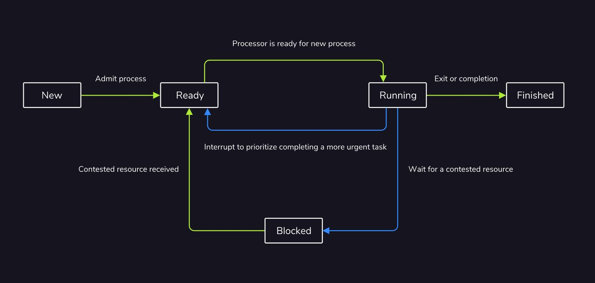
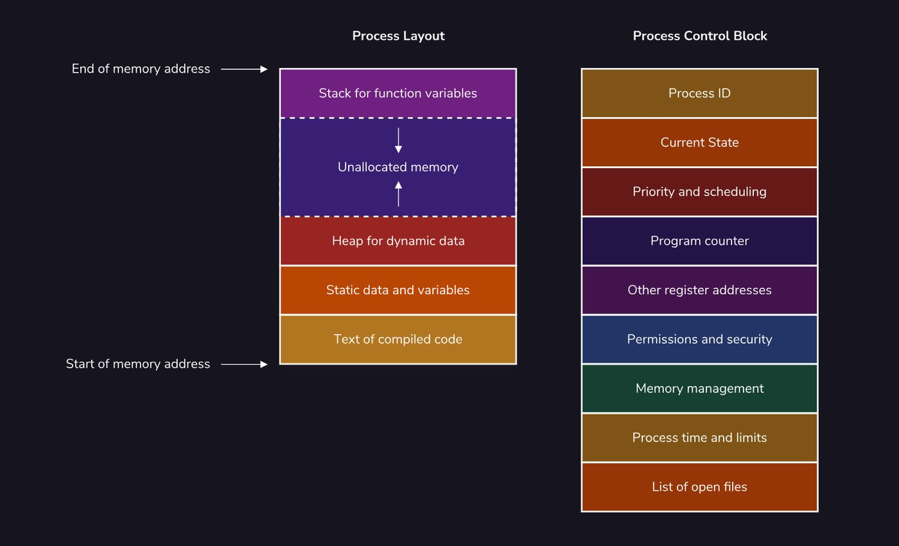
Multithreading
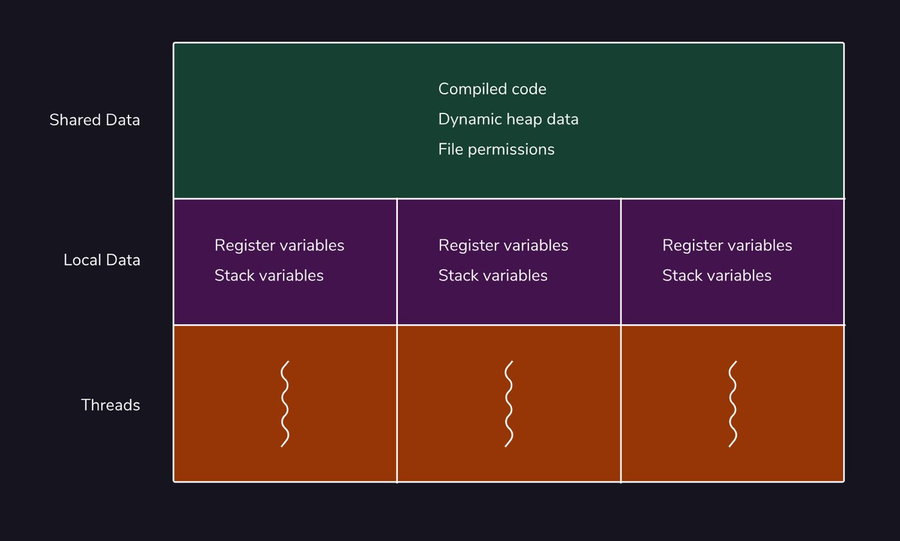
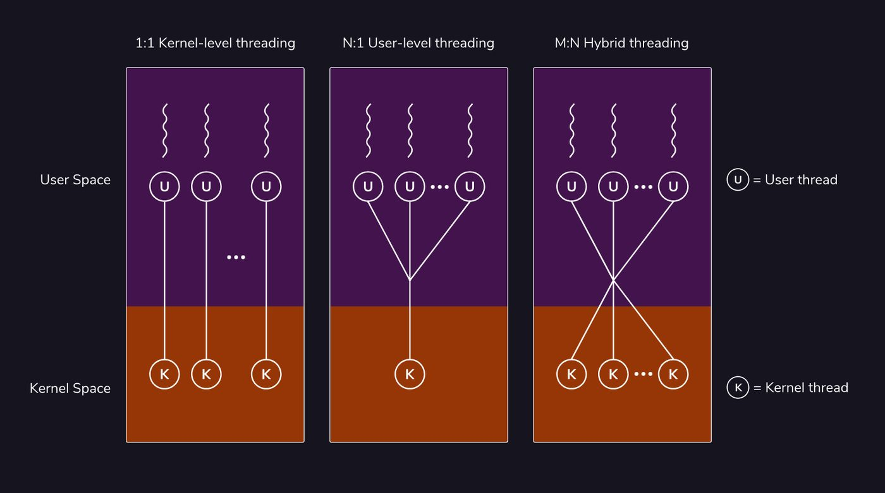
Chapter 2: Process Scheduling
Congratulations on learning so much on schedulers and the algorithms that organize them! Scheduling algorithms manage processes through the use of states and queues, each managed by one of the three process schedulers: the long-term scheduler which admits processes to the ready queue, the medium-term scheduler which blocks processes for access to resources, and the short-term scheduler which admits processes from the ready queue to the CPU to actually be executed.
How processes move within these data structures depends on the
algorithm used and the scheduling goals desired for the system. There are a variety of scheduling algorithms including:
- First come, first served, where processes are put into a queue and then executed in the order that they arrive.
- Priority scheduling, where each process is given a numeric priority and then those processes are organized and executed according to that priority.
- Shortest job first, a variation of priority scheduling, where processes with the shortest execution time, as calculated through some historical average runtime, are prioritized to run first.
- Shortest remaining time, a preemptive variation of shortest job first where processes with the shortest remaining execution time are prioritized to run first.
- Round robin, where a fixed amount of execution time, called a time slice, is chosen and assigned to each process. Each process is cycled through until eventually all of the processes are completed.
- Multiple-level queue scheduling, where processes are categorized and then placed in multiple queues or levels with differing priorities.
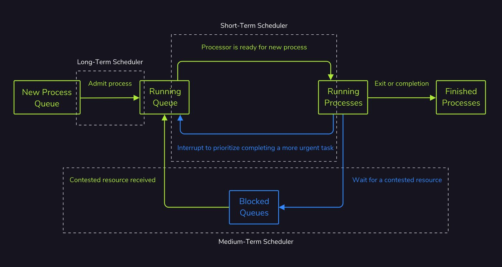
(Running Queue叫做Ready Queue更准确，应该是codecademy错了，与chatgpt确认)
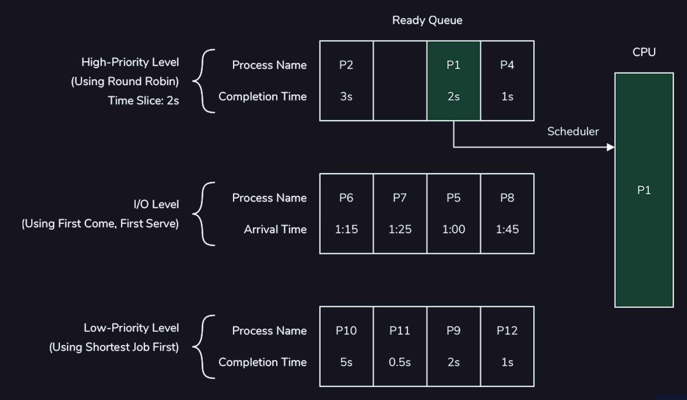
Chapter 3: Synchronization
Congratulations on completing this lesson on synchronization! Multi-threading is the backbone of any complex computer program, and synchronization is what allows us to multi-thread our programs safely. Let’s recap what we learned.
With locks, we are able to provide mutual exclusion on areas of our code where threads must access shared resources. In other words, locks make sure that only one thread at a time can access certain areas of our code.
Locks are not the only way to synchronize our programs. Atomic variables, for instance, are inherently thread-safe because modifying them takes place in exactly one atomic step. Condition variables and semaphores likewise allow us to synchronize our programs while preserving efficiency in cases where locking the entirety of a large resource is not a good option.
ChatGPT总结（更适合回顾）：
Synchronization 学习总结
这一章主要学习了 Multi-threading（多线程）中的 Synchronization（同步）。多线程可以让多个任务并发执行，提高程序的效率，但多个线程同时访问共享资源时，也会产生数据竞争（Race Condition）等问题。因此，需要使用同步机制来保证程序执行的正确性。
1. Critical Section 与 Race Condition
当多个线程访问共享资源时，其中一段必须保证不会被多个线程同时执行的代码称为 Critical Section（临界区）。
例如：
x = x + 1
看起来只有一行，但它实际上包含“读取 x → 计算 → 写回 x”等操作。如果两个线程同时执行，就可能出现：
初始：x = 0
Thread 1：读取 x = 0
Thread 2：读取 x = 0
Thread 1：写入 1
Thread 2：写入 1
最终：x = 1
虽然两个线程都执行了一次 +1，但最终结果却只有 1。
这就是典型的 Race Condition（竞争条件）：程序结果取决于多个线程执行的先后顺序。
因此，一个正确的同步程序需要满足三个重要条件：
- Mutual Exclusion（互斥）：同一时间最多只有一个线程进入临界区。
- Progress（进展）：如果临界区没有线程使用，并且有线程需要进入，那么不能无限期阻止它。
- Bounded Waiting（有限等待）：一个线程不能无限期等待进入临界区。
2. Mutex / Lock：保护临界区
最直接的解决方法是使用 Mutex（互斥锁）。
基本模式是：
lock()
Critical Section
unlock()
例如对于：
x = x + 1
可以变成：
lock()
x = x + 1
unlock()
如果 Thread 1 获得了 mutex，那么 Thread 2 在调用 lock() 时必须等待 Thread 1 调用 unlock()。
可以把 mutex 理解成一把门锁：
Thread 1 → 🔒 → Critical Section → 🔓
Thread 2 → 等待
因此：
Mutex 主要解决的是“同一时刻谁可以访问共享资源”的问题。
需要注意的是，Critical Section 和 Mutex 并不是同一个东西：
- Critical Section 是需要保护的代码区域；
- Mutex 是用来保护这个区域的同步工具。
3. Condition Variable：不要一直“傻等”
仅仅使用 mutex 有时仍然不够高效。
例如吉他商店中：
num_guitars = 0
Seller 想卖吉他，但现在没有库存。
如果只使用 mutex，Seller 可能不断执行：
lock()
检查 num_guitars
unlock()
lock()
检查 num_guitars
unlock()
...
这种不断检查条件的方式属于 Busy Waiting（忙等待），会浪费 CPU 资源。
因此可以使用 Condition Variable（条件变量）。
Seller 可以：
lock()
while num_guitars == 0:
wait()
sell guitar
unlock()
当没有吉他时，wait() 会让 Seller 等待，同时释放 mutex，这样 Maker 就能够获得 mutex 并生产吉他。
Maker 生产完成后：
num_guitars += 1
notify()
通知等待中的 Seller。
因此：
Condition Variable 解决的是“条件不满足时，不要一直占用 CPU 检查，而是等待通知”的问题。
这里有一个很重要的理解：
Mutex
↓
保护共享数据
Condition Variable
↓
让线程在条件不满足时等待
↓
条件满足后再被唤醒
wait() 的一个关键特点是：等待期间会释放 mutex，被唤醒后再重新获得 mutex，然后继续执行。
另外，实际程序中通常使用 while 而不是简单的 if 来检查条件，因为线程被唤醒后仍然应该重新确认条件是否真的满足。
4. Semaphore：从“谁能访问”到“还有多少资源”
之后学习了 Semaphore（信号量）。
Semaphore 特别适合解决 Producer-Consumer Problem（生产者-消费者问题）。
例如吉他商店最多只能存放 n 把吉他：
Buffer:
┌───┬───┬───┬───┬───┐
│ 🎸│ 🎸│ │ │ │
└───┴───┴───┴───┴───┘
此时：
num_occupied = 2
num_free = 3
其中：
- num_free：还有多少个空位置；
- num_occupied：已经有多少个位置被占用。
Producer 在放入吉他之前，需要确保：
num_free > 0
Consumer 在取出吉他之前，需要确保：
num_occupied > 0
因此：
Buffer 满了
↓
Producer 等待
Buffer 空了
↓
Consumer 等待
Semaphore 的核心思想可以理解为：
用一个计数器表示当前还剩多少资源。
5. Semaphore 和 Mutex 并不是互相替代
这一点是这一章中比较容易混淆的地方。
Semaphore 主要负责：
“资源还有没有？”
Mutex 主要负责：
“现在谁可以修改共享数据？”
例如多个 Producer 同时向 Buffer 中添加数据时，即使 Semaphore 告诉它们“还有空位”，它们仍然可能同时修改 Buffer。因此，实际的生产者-消费者程序通常需要同时使用 Semaphore 和 Mutex。
一个典型的 Producer 流程可以理解为：
wait(num_free)
↓
确认有空位
↓
lock(mutex)
↓
修改 Buffer
↓
unlock(mutex)
↓
signal(num_occupied)
↓
告诉 Consumer：现在有新的数据
Consumer 则相反：
wait(num_occupied)
↓
确认有数据
↓
lock(mutex)
↓
修改 Buffer
↓
unlock(mutex)
↓
signal(num_free)
↓
告诉 Producer：现在有新的空位
因此可以把它总结为：
Semaphore → 管理资源数量
Mutex → 保护共享数据
6. Atomic Variables：另一种同步方式
除了锁、条件变量和信号量，还学习了 Atomic Variables（原子变量）。
如果一个操作是 atomic 的，就意味着这个操作对于其他线程来说是一个不可分割的整体，不会出现“操作做到一半被其他线程插入”的情况。
例如某些语言提供：
atomic_increment(x)
那么多个线程同时进行增加操作时，可以保证这个增加操作本身是线程安全的。
因此：
Atomic 操作适合处理一些简单、不可分割的共享变量操作，而不需要为整个临界区使用 mutex。
7. 这一章最重要的知识结构
通过这一章的几个例子，可以把同步机制放在一起理解：
Synchronization
│
┌───────────────┼────────────────┐
↓ ↓ ↓
Mutex Condition Variable Semaphore
│ │ │
↓ ↓ ↓
谁能访问？ 什么时候继续？ 资源还有多少？
│ │ │
↓ ↓ ↓
保护临界区 等待/通知机制 管理资源数量
它们解决的是不同的问题，而不是简单地谁“更高级”。
8. 我的理解
这一章让我意识到，多线程真正困难的地方并不是“让多个线程同时运行”，而是：
如何在允许并发的同时，又保证共享数据的正确性和程序的效率。
最开始的问题是两个线程同时修改 x，因此需要 Mutex 保证 Mutual Exclusion。
但是如果线程只是因为某个条件暂时不满足而等待，例如 Seller 等待库存，就不应该不断获取和释放锁，因此引入 Condition Variable，让线程可以在条件不满足时休眠，并在条件满足后被通知。
进一步，当问题从“保护一个共享变量”扩展到“管理有限数量的资源”时，例如有限大小的 Buffer，就可以使用 Semaphore 来记录剩余资源数量。
因此，这一章的核心并不是记住几个同步工具，而是理解：
不同的并发问题，需要不同的同步机制。
最终可以形成这样的思考方式：
有共享数据
↓
是否存在并发访问冲突？
↓
Yes
↓
需要什么同步方式？
│
├── 保护临界区
│ → Mutex / Lock
│
├── 条件不满足时等待
│ → Condition Variable
│
├── 管理有限数量的资源
│ → Semaphore
│
└── 简单、不可分割的操作
→ Atomic Operation
这也是多线程编程中一个很重要的思想：同步不是为了让线程失去并发性，而是为了在保证正确性的前提下，尽可能保留并发带来的效率。
Chapter 4: Memory Management
Memory is possibly the most important resource our computer has, so the way in which information is stored in memory is critical to maintaining an efficient, safe computing environment.
The term memory refers not to just one place where information is stored, but a number of different places like disk, RAM, and our processor registers. These types of memory vary in two ways: size and speed. As a general rule of thumb: the faster the memory, the less of it we have to work with.
With the memory management technique segmentation, a process’ data is stored in a single block of contiguous physical memory that varies in size from process to process. Segmentation can lead to fragmentation, though, a suboptimal way in which blocks of memory are allocated which makes managing memory more difficult.
Paging, on the other hand, avoids these inefficiency concerns by allocating memory for a process in smaller, non-contiguous blocks of memory called pages. By splitting up our process’ memory into smaller pieces and not allocating those pieces contiguously, the OS has much more flexibility about where to allocate memory.
Virtualization allows the operating system to sandbox user-space processes to protect other processes (especially the operating system kernel) from attacks on their memory by rogue processes.
You should now have a basic understanding of how an operating system fulfills its role as memory manager. Congratulations on completing this lesson!
Chapter 5: Filesystem
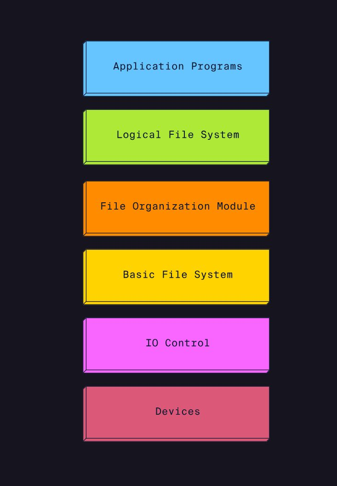
Congratulations on completing the lesson and learning more about filesystems! Let’s go over what we covered:
Filesystems are the data structure used by operating systems to store and retrieve data. Therefore they are crucial for the daily operations of a computer and learning about them.
The building blocks of the filesystem are the files themselves. A file is a unit of storage used to describe a self-contained piece of data.
Files can have a variety of formats depending on the type of data that they store, as indicated by the file extension following their name.
Files have permissions that determine which users and groups can read, write, and execute that file.
Directories are the data structure that contains references to files as well as other directories. Both files and directories can be created, opened, written, listed, and deleted using a wide variety of commands.
The file system itself is organized in a collection of abstract layers. These layers include the applications, logical file system, file-organization module, basic file system, IO control, and the storage devices themselves.
Chapter 6: I/O Hardware
Congratulations on reaching the end of this lesson! Let’s review what we have learned so far about IO hardware:
- There are different types of IO devices that can be categorized into three general categories: human-readable, machine-readable, and communication.
- There are two types of device drivers: kernel-mode and user-mode. Device drivers support the communication between IO devices and the CPU.
- There are three methods that IO devices use to read/write data: character, block, and network.
- In IO systems, blocking is a method in which when an IO makes a request, an application typically cannot continue executing other requests until it has the necessary information changes from the IO.
- In contrast, non-blocking requests get placed into a queue while waiting so that the CPU resources can be used to complete other tasks from the event pool of an application.
- The interrupt handler is like a pool or queue of interrupts being sent to the CPU. It handles the execution of interrupt signals as they are received from IO devices.
- Memory-mapped IO refers to a system that is designed to allow both an IO device that is connected to a computer and the memory of the computer to share address space to the interface.
- Direct memory access (DMA) refers to a method in which IO devices have direct access to the main memory of a computer. For DMA, a CPU will trigger the execution of data to/from an IO device to a computer, but then will continue to complete other tasks while the data transfer executes.
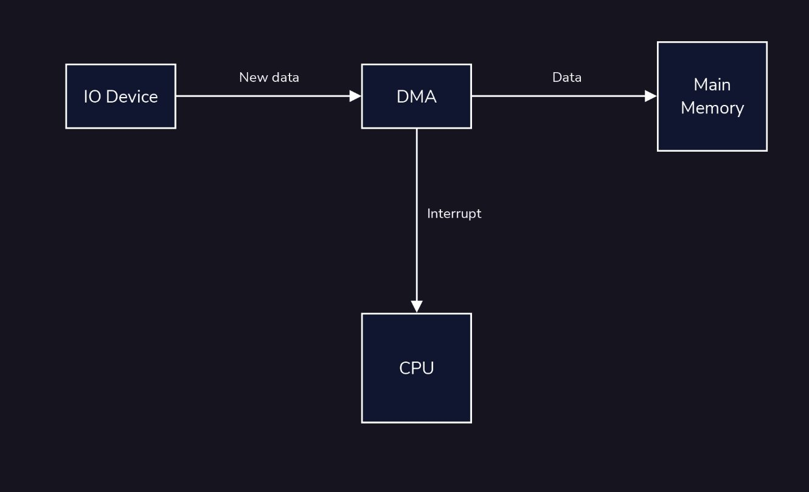
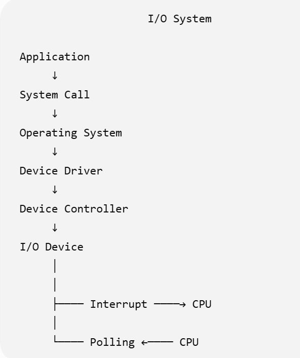
Chapter 7: IO Software
Great job reaching the end of the lesson! Let’s review what we have learned about IO software:
- The user-space is the place in memory in which user processes run and the kernel-space is the place in memory in which the kernel functions and manages system calls.
- The user-space interacts with the kernel by sending system calls to the kernel-space.
- Layers of the IO system that support kernel-space include: device-independent software, device drivers, interrupt handlers
- Layers of the IO system that support user-space include: user-level IO software
- Device drivers are device-specific code that is added to a computer so that a device may interact with a computer.
- The interrupt handler is a pool or queue of interrupts being sent to the CPU.
- Device-independent software refers to the software components that handle functions that are not specific to any single IO device.
Now that we have reviewed IO hardware and IO software, we can understand how both are connected and contribute to how we interact with a computer.
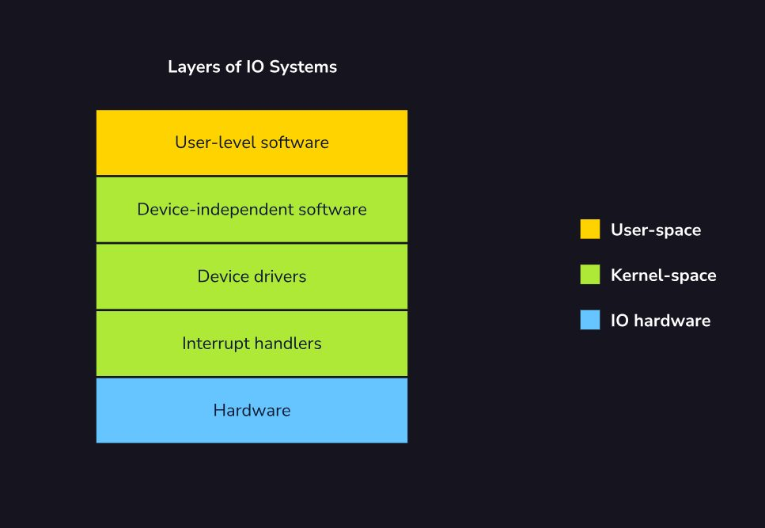
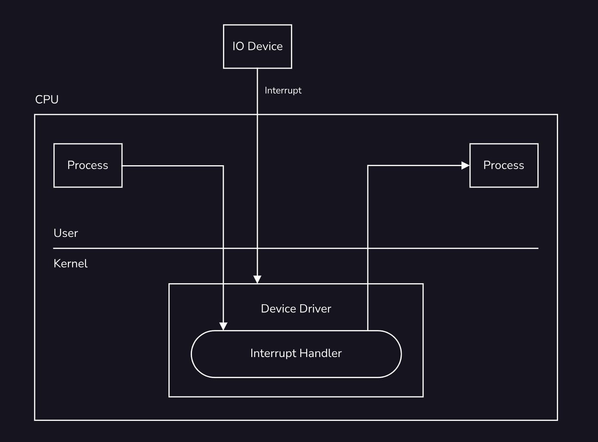
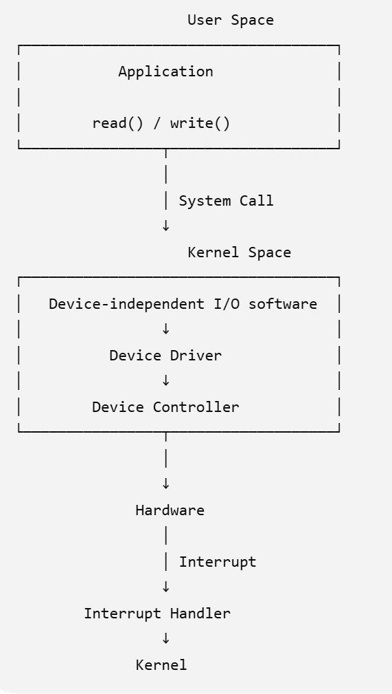
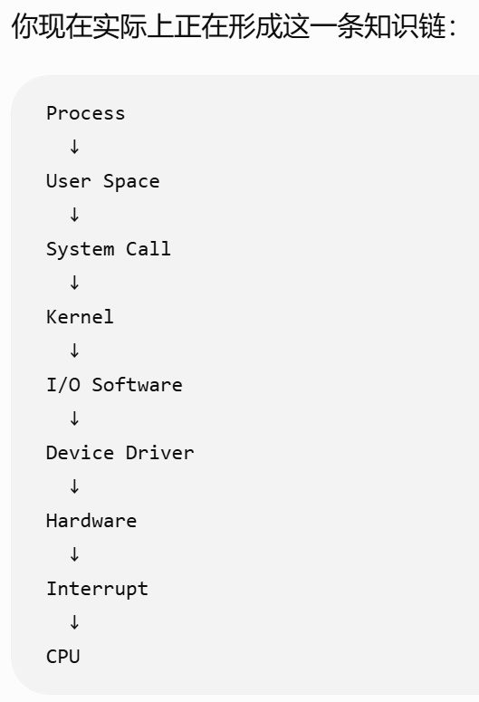
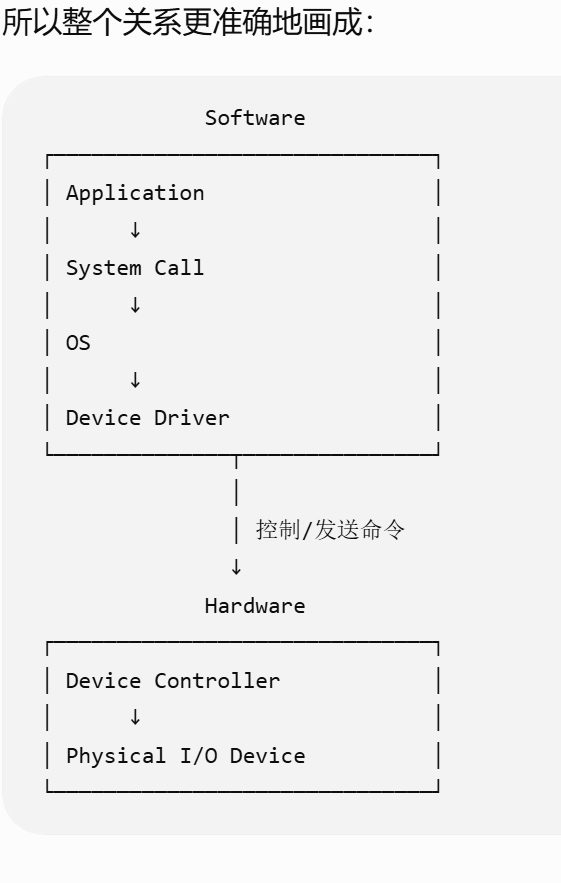
写在最后：
这门课总体收获还是挺多的，了解了很多原来听过但不了解的东西，也补充了很多新知识，关键是对于OS 这个领域有了最最最基础的认识，因为我发现这个领域确实内容还是很多的，就现在而言，最后一章关于IO System的，我基本是什么也没有看懂......（在ChatGPT老师帮助下又理解了很多，感谢AI大人的神力）
学习这门课花的时间还挺多的，它标识两小时，我至少花了六七个小时......没这么少，跨度三天零碎时间看完了
常见疑问：
What is the difference between device drivers and controllers?
答：
Device drivers are software programs that enable our OS to operate hardware devices like keyboards and monitors. Driver software might contain a list of commands a computer can send to a device and the types of information it can expect to receive back. A device controller, on the other hand, is hardware. It provides an interface between the device driver and the device itself. The device controller will take in commands from our computer — and translate them into electrical signals the hardware device can understand. We need this because our hardware devices generally do not understand the language our computer speaks. We need an intermediary to translate between the two.